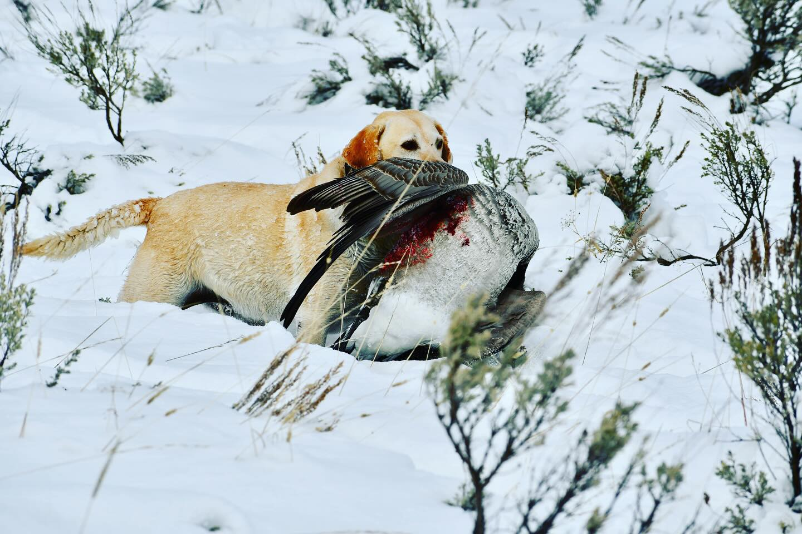

Episode 20 · January 06, 2024 · 2849
(EP: 020) Awesome Waterfowl Recipe, Best Waders on the market & How to Introduce Your Dog to Retrieving Geese.

About This Episode
In this episode we talk about a really good waterfowl recipe, best waders on the market, dog kennels & how to get your retriever to retrieve geese. For Kuranda dog beds copy the link for purchase. This helps us out and we really appreciate it.
Questions about the training topics in this episode? Tyce works with bird dog owners and hunters through Utah Bird Dog Training. Reach out to work with him directly.
Resources & Links
- Kuranda Dog Beds — Elevated, chew-proof dog beds.
- Utah Bird Dog Training — Tyce's professional training services.
Transcript
Full transcript for Episode 20: (EP: 020) Awesome Waterfowl Recipe, Best Waders on the market & How to Introduce Your Dog to Retrieving Geese..
Tyce
Hey everyone, welcome to the Bird Dog Podcast. My name is Tyce. Three topics today: a waterfowl recipe that has become a genuine favorite around here, my recommendation for waders after trying a lot of them, and how to introduce a young dog to retrieving geese for the first time.
First, the recipe — this one came from a friend and his kids ask for it every year now. Start by debonding the bird and cutting the meat into thin strips or small cubes, about quarter-inch to one-inch pieces. Soak the meat in whole milk for two to three days. Change the milk after the first 24 hours. What the milk does is leach out the gaminess — the flavor that makes a lot of people reluctant to eat waterfowl. When you pull the meat out after two days, you'll see the milk has visibly permeated the tissue. It works.
After soaking, dry the meat and season it with Montreal steak seasoning — mix it well so everything is coated. In a skillet, cook diced bacon until done, then remove the bacon and use the bacon grease to stir-fry the meat with canned pineapple chunks (drained). Key: don't overcook the duck or goose. You want medium-rare — seared on the outside, still pink inside. The moment the meat goes gray all the way through, you've crossed into "livery" territory. Serve in warm tortillas with the bacon, the pineapple, and a drizzle of ranch. That's it. Simple, and it converts people who swore they didn't like waterfowl. Try it on geese too — I've found it works just as well as on ducks.
On waders: I switched to Sitka waders last season and they've been the best I've used. A few standout features — the front zipper that runs to your waist is a genuine quality-of-life improvement for cold weather hunting. The knee pads are built well. The boots are form-fitting and insulated; my feet were warm in single-digit temps when my buddy in standard waders was suffering. Sitka does back their waders with lifetime repair service, which justifies the price if you're going to be hunting hard in them year after year. Buy once, cry once — that's my recommendation if you've been burning through cheaper pairs every two or three years. I've also been wearing Hollow Socks made from alpaca wool inside them — my wife got me a pair for Christmas and they've been excellent. If you're borderline cold in your current setup, try the alpaca socks before buying new waders.
On geese and young dogs: I had a young female out on a river hunt where we knocked down two Canada geese. Sent her on a blind to retrieve the first one and she ran up to it, sniffed it, and then turned and came back. Classic first-goose reaction — the bird is half her size, it's unfamiliar, and she just wasn't sure what to do with it. I've seen this many times. A force-fetched dog will pick the bird up if you ask firmly, but I'd rather build confidence than force it. I encouraged her, she went back, started grabbing at the wing, and eventually committed. That's a win for a first goose.
The better way to prepare for this is before the season: if you can get a dead goose or borrow one, take it out in the yard and let the dog work with it in a low-pressure setting. Let the dog investigate, pick it up, carry it around. Build the association that a goose is just a bigger duck — the same game, the same job. Doing that work in the backyard means when you're on the river and the dog runs up to a Canada, it's already made peace with the size. Thanks for listening.
About the Host
Tyce Erickson
Tyce Erickson is a professional bird dog trainer and the owner of Utah Bird Dog Training in Utah. For nearly two decades he has worked with pointing dogs, retrievers, and family hunting dogs — helping owners build dogs that are capable and enjoyable in the field. The Bird Dog Podcast is an extension of that work: honest conversations on training, hunting, breeding, and everything that goes into a life spent working dogs.
More About Tyce